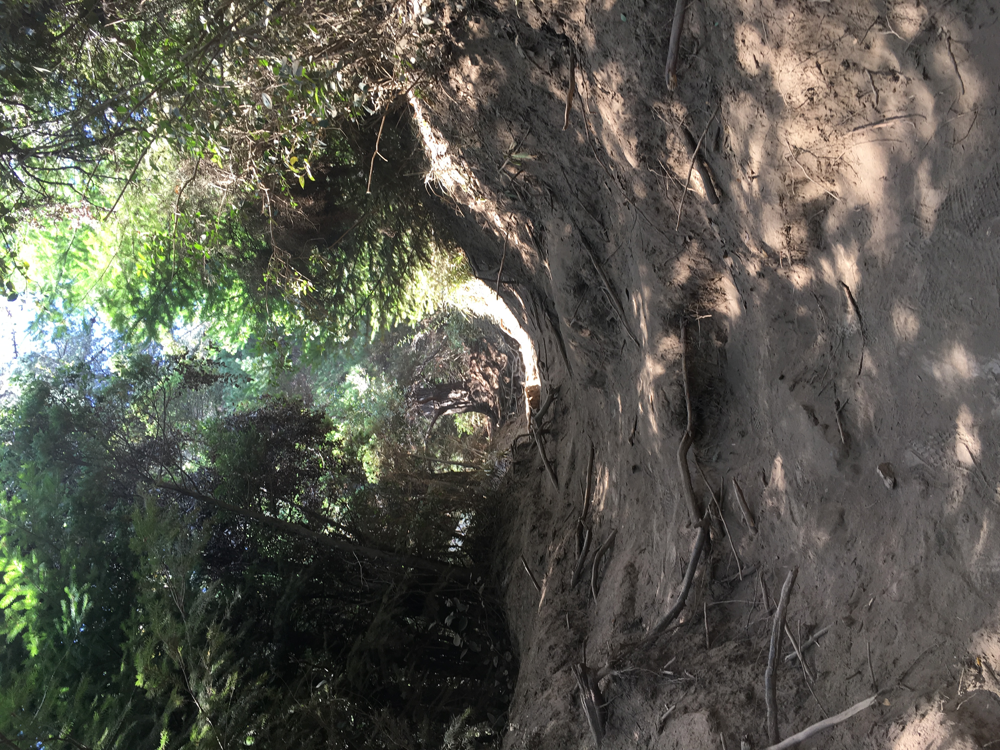

Desarrollador Front-end. Javascript, NodeJS, Html5, Css3, Sass, bootstrap. Actualmente perfeccionando habilidades y aprendiendo constantemente nuevas herramientas. Gran motivación para seguir perfeccionando habilidades y crecer profesionalmente. Confío plenamente en mi capacidad de producir ideas para el crecimiento de todos como equipo de trabajo, para ayudar a su vez a las empresas a crear aplicaciones grandes y complejas que sirvan a miles de usuarios utilizando tecnologías modernas.
